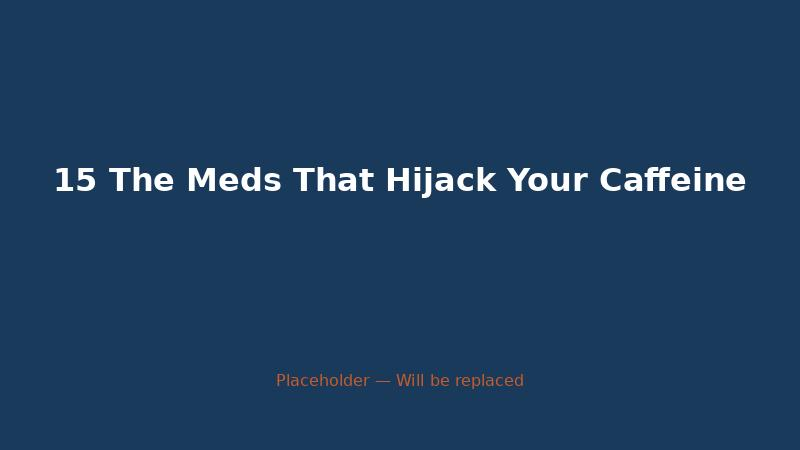

Seattle Heat Wave Caffeine Toxicity 2026
Seattle hit 95°F last Tuesday. I know that doesn't sound like much to people in Phoenix or Dallas. But Seattle is not built for 95 degrees. We don't h...

Afternoon Coffee Cost Three Nights Sleep
I used to think caffeine had a six-hour half-life. That was the number I carried in my head, the one that let me drink coffee at 3 PM and tell myself ...

Seattle Heat Wave Caffeine Toxicity
My Caffeine Habit Nearly Sent Me to the ER During Seattle's Hottest June on Record Alex Morgan I was on my third cold brew of the day when the dizzine...

The Monday I Accidentally Drank 600Mg Of Caffeine
The Monday I Accidentally Drank 600mg of Caffeine Before Noon The pipette did not slip this time. The mistake was much bigger than a smeared calibrati...

That Pre Workout Powder Has 400Mg Of Caffeine And Thats Not
That Pre-Workout Powder Has 400mg of Caffeine. And That's Not Even the Worst Part. 400 milligrams. That's what the label said. One scoop. Four hundred...

13 Age Slows Your CYP1A2 — CaffeineCheck
The first time I noticed it, I was thirty-three. I’d had my usual morning coffee – a 16-ounce pour‑over, about 200 mg of caffeine – and then a second ...

12 Caffeine, Fat Oxidation, and the Overweight Athlete — CaffeineCheck
I asked him how much caffeine. “200 mg,” he said. “Sometimes 400.”

07 Growing Brains on Caffeine — CaffeineCheck
The research monkey sat in a cage with a feeding tube. I saw the video during a lecture at a neuroscience conference in 2019.

10 Pre-Workout Powder: 400mg Caffeine + ?? — CaffeineCheck
The scoop was larger than I expected. I’d bought the tub online after reading reviews that promised “laser focus” and “unstoppable energy.” The label ...

14 Pregnancy: When Caffeine's Half-Life Triples — CaffeineCheck
The pregnancy test had two lines. Sam held it up to the light. “Is that positive?” she asked. I took it from her. The second line was faint but there....

08 School Lunch’s Hidden Caffeine — CaffeineCheck
It sold energy drinks. Not the small cans. The tall ones. Sixteen ounces. Labels that screamed “EXTREME” and “POWER” and “ZERO SUGAR.” Bright neon col...

03 Slow Metabolizer‘s Dilemma: CYP1A2 CC and Heart Risk — CaffeineCheck
The mother’s name was Denise. Her son, Tyler, was seventeen. He played football. He was six feet tall, two hundred pounds, no known health problems.

06 The 200mg Teenager — CaffeineCheck
The can was blue. That’s the detail I remember. A bright, electric blue can with black lettering, sitting on the counter of a 7‑Eleven in Seattle, bat...

17 The 70-Year-Old Who Quit Coffee at 5 PM and Still Couldn’t Sleep — CaffeineCheck
The man’s name was Frank. Seventy-two years old. Retired engineer. He’d been drinking coffee since college, always the same routine: one cup at 7 AM, ...

05 The Anxious Cup — CaffeineCheck
Not the dramatic kind. No chest pain, no shortness of breath. Just a single skip, a pause, then a thud.

09 The Cheerleader‘s CYP1A2 Was Never Tested — CaffeineCheck
The Energy Drink Comparator lists Alani Nu at 200 mg of caffeine per can.

01 The Half-Life in My Blood — CaffeineCheck
The pipette slipped. Just a little. Enough to smear the calibration line across the page of my lab notebook.

11 The Man Who Drank 6 Energy Drinks Before His Game — CaffeineCheck
By 5 PM, he was in the emergency room. His heart was beating at 170 beats per minute. His blood pressure was 180/110. He was vomiting. He was confused...

15 The Meds That Hijack Your Caffeine — CaffeineCheck
Fluvoxamine is a potent inhibitor of CYP1A2. It can reduce the enzyme’s activity by up to 90%.

02 Why Your 3 PM Coffee Keeps You Up at 11 PM — CaffeineCheck
The mug was still warm. I remember that. My hand wrapped around the ceramic, feeling the last traces of heat bleed into my palm. It was 3:47 PM.

04 Why Your Partner Can Sip Espresso at 9 PM — CaffeineCheck
Sam makes tea at 9 PM. Not decaf. Real black tea. A bag of English Breakfast steeps in a ceramic mug while she scrolls her phone, and by 9:30 she’s in